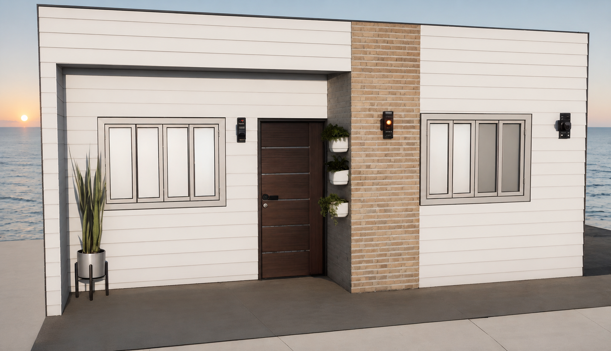

La perla de Isopanel Uruguay
Casa Maracaná
Nuestro proyecto insignia: una vivienda de 49 m² pensada de punta a punta en isopanel, del plano a la llave en mano. Es la síntesis de todo lo que sabemos hacer.
La casa
Con 49 metros cuadrados, esta casa tiene más espacio habitable, permitiendo una distribución más cómoda de las habitaciones y áreas comunes. Tiene dos dormitorios separados, y con más espacio disponible, las áreas comunes —como la sala de estar y la cocina— son más amplias y cómodas: hay lugar para una mesa de comedor, un área de estar más grande y una cocina más completa, con espacio para una lavadora. El baño es más espacioso y cómodo, y posee un porche en el frente de la casa que le brinda un área exterior compacta y moderna.
El diseño de la Casa Maracaná sigue un delineado minimalista en sintonía con lo más moderno en proyectos arquitectónicos: geometría clara y sin adornos, líneas limpias y simples, funcionalidad y utilidad como prioridad. Aunque simple, busca lograr armonía y equilibrio en cada espacio, transmitiendo un sentido de calma, orden y elegancia. Es un proyecto ideal para vivienda familiar, casa de vacaciones, alquiler temporal o alquiler permanente.
Maracaná incluye
- Módulo completo
- Piso laminado
- Ventanas de aluminio
- Baño completo
- Grifería
- Instalación eléctrica interna
- Puertas internas y aberturas
Podemos diseñar un espacio exterior y un mobiliario a tu gusto y a medida de tus necesidades.
Opcionales
Ofrecemos una amplia gama de opcionales para tu Casa Maracaná:
- Muebles a medida
- Instalación eléctrica con pilar e instalación subterránea
- Instalación completa de agua
- Cierre predial
- Decks y pérgola
- Eco saneamiento con biodigestor
- Jacuzzi instalado con sistema de calefacción
- Sistema de cámaras instalado
- Sistema de alarma inteligente instalado
- Piscina
- Paneles solares
Además de nuestros proyectos, podemos elaborar uno a tu medida, gusto y necesidad. Nuestros módulos pueden ser transportables, llegando prontos a tu terreno.
Revestimientos

Espesores configurables
100 mm — aislación estándar, ideal para climas templados y uso habitacional habitual.
Vista 360°
Arrastrá para recorrer la Casa Maracaná por dentro.
Modo editor
Elegí una opción y mirá cómo cambia la fachada.

Proceso completo de obra
El mismo proceso aplica también a los módulos más chicos, de 15, 30 y 49 m².
- 01Nivelación de terreno (opcional)
No es un paso obligatorio: si tu terreno ya está nivelado o tenés pilotes, construimos directamente sobre eso. Se cotiza aparte solo si la solicitás.
- 02Trámites con la intendencia
Te acompañamos en las gestiones necesarias antes de construir.
- 03Arquitectos disponibles
Contamos con arquitectos para ajustar el proyecto a tu terreno.
- 04Cierre de obra e instalación eléctrica
Levantamos la estructura y dejamos lista la instalación eléctrica dentro de la obra (no incluye trabajos sobre la red pública ni las columnas de UTE).
- 05Entrega llave en mano
Casa terminada.
- 06Soluciones extras
Brindamos gestión integral en los organismos públicos correspondientes (UTE, OSE) y proyectos arquitectónicos a medida.
Galería


El mismo equipo que lideró la Casa Maracaná es el que resuelve galpones, naves industriales, interiores, pintura de isopaneles y techos en toda la obra que hacemos — con la misma confianza, mano de obra, agilidad y comodidad. Conocé nuestras obras →